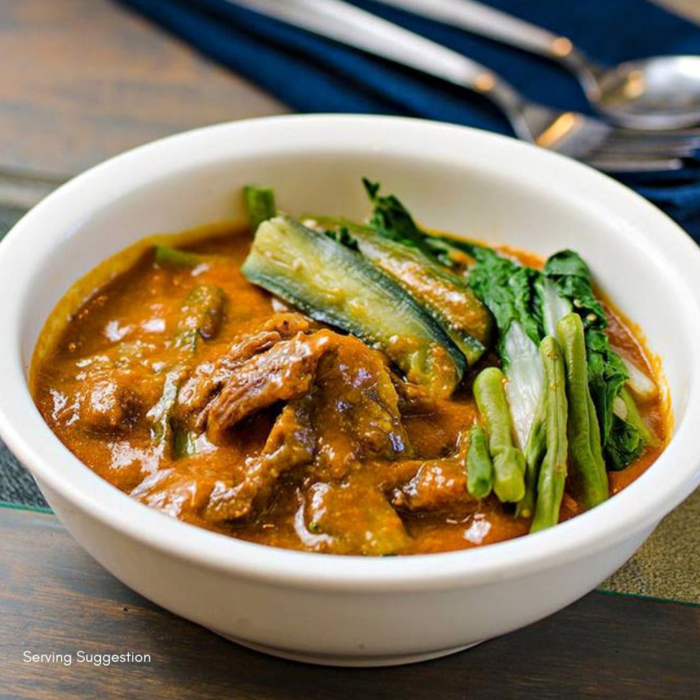

Kare-Kare Recipe
Home Button

Kare Kare is a traditional Filipino stew complimented
with a thick savory peanut sauce.
The commonly used meats for this dish are ox tail, tripe, and pork leg;
on some occasions goat and chicken meat are also used. Besides the peanuts,
this dish depends on the shrimp paste (on the side) in order to be fully enjoyed. T
raditionally, “palayok” (clay cooking pot) is used to cook this dish and it is also
used as the serving pot.
Ingredients
- 3lbs oxtail (can also use beef)
- 1 piece small banana flower bud
- 1 bundle pechay or bok choy
- 4 pieces eggplants
- 1 cup ground peanuts
- 1/2 peanut butter
- 1/2 cup shrimp paste
- 34 Ounces Water (about 1 Liter)
- 1/2 cup annatto seeds
- 1/2 cup toasted ground rice
- 1 tbsp garlic
- 1 piece onion
- salt and pepper
Steps
- In a large pot, bring the water to a boil
- Put in the oxtail followed by the onions and simmer for 2.5 to 3 hrs or
until tender (35 minutes if using a pressure cooker)
- Once the meat is tender, add the ground peanuts, peanut butter, and coloring
(water from the annatto seed mixture) and simmer for 5 to 7 minutes
- Add the toasted ground rice and simmer for 5 minutes
- On a separate pan, saute the garlic then add the banana flower,
eggplant, and string beans and cook for 5 minutes
- Transfer the cooked vegetables to the
large pot (where the rest of the ingredients are)
- Add salt and pepper to taste
- Serve hot with shrimp paste. Enjoy!
Recipe Source page